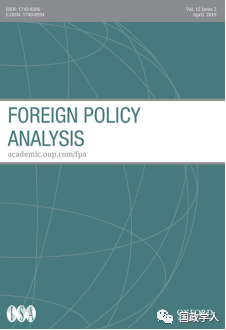
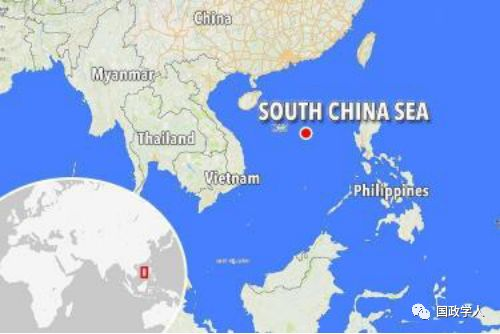

收录于合集
简 介
【作者】 Alexander Korolev，新南威尔士大学教授，研究领域涵盖国际关系理论、比较政治，并以中俄为主。近期论文刊登于 Critical Review, Chinese Journal of International Politics, International Studies Review, Pacific Affairs, Studies in Comparative International Development, Journal of Strategic Studies, The Chna Review 不等。
**【 编译】**高嘉琳
【审校】 袁浩延、崔宇涵、高嘉琳
【来源】 Foreign Policy Analysis, Volume 15, Issue 2, April 2019, 263-222
【期刊】 ****Foreign Policy Analysis，成立于2005年，是由牛津大学出版社代表国际研究协会出版的季刊。现任主编為Klaus Brummer（德国Eichstätt- Ingolstadt天主教大學）和Brian Lai（美国爱荷华大学）。主要以比較、实例研究的方式介紹外交政策的決策过程、效果，原因和结果。

俄罗斯南海议题策略：平衡及对冲
Russia in the South China Sea: Balancing and Hedging
Alexander Korolev
内容提要
**1
** 引言
国际关系学者始终无法针对俄罗斯涉入南海事务的争议提出明确解读。就表面而言，俄罗斯官方试图向国际社会表明其并未直接置身于南海议题，且不倾向参与其中。但侧面来看，却可发现实际上俄罗斯欲以大规模武装力量左右此争端。其中，最引人猜想的是俄罗斯与中国、越南的关系。中国与越南是俄罗斯在亚洲的重要伙伴，同时亦为南海争端中的两大敌对国。有部分人认为，俄罗斯同时与两国互动紧密，可能将对其自身角色造成负面影响，因而俄罗斯终将在两国中选边站。自2010年中越就领土问题冲突的加剧，莫斯科便转而加强和两国军事、经济领域的合作。俄中、俄越关系皆因此有显著进展。再者，与北京、河内的军事合作也使俄罗斯渐成为南海地区争端中的重要因子；即揭示虽俄罗斯并未直接涉入南海地区的领土问题，但却能够对于此争议带来直接性的影响。
本论文架构如下：第一部分将 针对莫斯科对于南海争端采取的官方行为，及和中、越两国的政策进行讨论 。第二部分将 以 “平衡 （ balancing ） ” 、“对冲（hedging ） ” 作为衡量大国行为的两要点，并借此重新审视理论框架 。第三部分将 以 “平衡”面向作为俄罗斯基础，检视其就南海争端的具体行为；第四部分则改 以 “对冲”作为面向进行探究。第五部分 将总结俄罗斯于南海议题所采取的行为及政策 。

2
俄罗斯南海议题策略：官方立场及其实践
俄罗斯官方持续就南海争端表明其中立立场。因为莫斯科就南海议题并未有其领土主张，也从未正式接受抑或公开支持任何国家于南海地区的领土主权。其官方表态如下：
提倡和平解决，呼吁争议各方自制并仰赖政治–外交途径寻求解决方式；
勿以正当性及领土主权作为主要立场；
双方皆应遵守1982年提出之联合国海洋法公约（United Nation Convention on the Law of Sea, UNCLOS）；
支持履行2002年签署之《南海各方行为宣言》，并强调宣言的体系完善；
排除区域外国家对于南海争端的干涉；
俄罗斯反复重申以上原则，并不断向国际社会及争议各方表达此立场。
有别于美国，俄罗斯未曾公开质疑中国“九段线（nine-dash line）”的正当性；在中美关系愈趋紧张的状况下，被解读为对中国的间接支持，而随后俄罗斯外交部发言人发布声明回应媒体臆测，表明俄罗斯并非当事国且无意涉入其中，并以向任一方靠拢作为原则。
然而莫斯科的外交新闻却与其官方言论相违，反映其战略目标。本文作者在此段列举2012至2016年间与中国及南海地区相关国家互动事件，检视其与各国的关系消长。为解释俄罗斯的行为模式，可以借由平衡、对冲两种大国外交政策的观点去分辨、解释其在南海争端所扮演角色。事实上，俄罗斯看似有利或无益于中国、越南的行为皆可视为平衡、对冲的不同策略。
3
对冲、平衡与大国政治
**
**
“ 平衡”、“对冲”经常出现于国际关系领域的语境中。然而，两者之间概念上的区别仍需加以琢磨。如下述，平衡及对冲代表分别基于两种不同因果、分析层次的行为模式。平衡为体系结构所造成的现象，对冲则反之，两者的概念化立足于二者间的理论差异。
第一，平衡为大国针对体系内最具威胁国所采取的直接性对抗行为；而对冲则包含大范围行为主体，无论其大小，且有许多基于不同地区、国家利益的政策，不需以体系内领导国作为目标国。
第二，平衡相较于对冲的策略更加线性化。对冲被视为“参与—抵抗策略（engage-and-resist strategy）”，具体表现为对同时发生于国家间的特定议题，释出积极、消极举止态度。
第三，二者间的区别表现于“外交政策（foreign policy）”、“国际政治（international politics）”两者的本质差异。对冲较偏向外交政策类别，涵盖各类形式并且附属于一连串因果关系，而非源于国际体系的压力。
**4
**
俄罗斯平衡策略与南海争端
**
**
鉴于前述概念，俄罗斯为平衡地区体系，将可能监督、封锁或打击美国的地区政策，且也应将美国、美国为首之北大西洋公约组织的东扩视为对自身存续及国家安全的威胁。俄罗斯试图以各种策略挑战美国为首的体系，如 2008年对格鲁吉亚政策、2014年乌克兰、2015年叙利亚等，皆间接证实了上述预测。由此观点出发，于俄罗斯而言，南海地区争端仅为其全球策略的一部分。因此基于体系平衡，俄罗斯须在以抵抗美国霸权的前提下（非领土主权）和中国合作（共同抵抗美国的单极支配）。由此可见俄罗斯就南海争议政策所涵盖之体系平衡意图：俄中合作是基于抵抗美国而非支持中方领土主权。
本文作者将此段分为两大部分，在第一部分主要讨论俄罗斯作为地区体系的主要平衡国，和美国间的地缘竞争，并提及美国方面压力对于中国、俄罗斯及南海事务的影响；而第二部分则主要关注俄罗斯同样行为模式于南海地区带来的结果，提及菲律宾和越南等国。并针对俄中与俄越两国的合作关系略作探究。
**5
**
俄罗斯对冲策略与南海争端
**
**
平衡仅为俄罗斯对于南海争端采取之行为的其中一个因素。为理解俄罗斯就此议题提出政策的潜在原因，有必要将观察层面转移至国家互动层级，检视其行为模式及战略意图 ——附属于地区间、国内情势等因素，而非国际体系压力。虽不能将体系对于其政策的影响全然排除，然而本段分析将表明俄罗斯的对冲策略有更大部分是由短期的地区、国内情势所驱使，而非体系内权力、威胁。在对冲层面，俄罗斯把握各种机会，借由南海议题创造利于合作的环境并采取不同策略——对冲——满足自身经济利益，促进其经济及和亚洲国家间关系的发展。因此，地区性对冲并非体系性质，不仅是因为对冲多发生于地区，同时亦归因于对冲不受体系所影响。
本文作者将此段分为两大部分，在第一部分主要借由俄罗斯于南海议题自2013至2016年所采取的政策、行为，检视其对冲策略的实际应用；第二部分则主要关注于俄罗斯对冲策略的采用对于南海争端造成的影响，并探究俄罗斯的涉入对于中、越关系带来的改变。
6 结 论
本文旨在利用体系平衡、地区对冲两种不同层级解释俄罗斯对于南海争端所提之政策，两种策略皆体现于俄罗斯的行为之中。就体系层面而言，俄罗斯的政策是受抵抗强权的意图所驱使，因而促进其与中国及地区其他国家的互动；而就地区层面来说，俄罗斯采用对冲以利于自身与亚太地区经济互动、融合的目的。以此非体系层级的观点出发，因为不受体系压力驱使，区域内国家无论大小，中国抑或是美国，伙伴、敌对关系皆处于变动状态。
_ ** 官网 链接：**_
https://academic.oup.com/fpa/article-abstract/15/2/263/4860420
** 本文由国政学人微信平台独家编译首发**
更多阅读
【重磅速递】约瑟夫·奈：美国霸权的兴衰：从威尔逊到特朗普 | 国政学人
【重磅推荐】巴里·布赞：英国学派视角下的中国崛起 | 国政学人
【重磅速递】米尔斯海默：注定失败：自由主义国际秩序的兴衰 | 国政学人
【美国研究】IS杂志：为何美国的外交大战略如此稳定？| 国政学人
【英国脱欧】以欧盟为核心的多中心外交：脱欧后英国的欧洲外交战略 | 国政学人
【民族主义】江忆恩：中国的民族主义正在高涨吗？基于对北京群众的调查 | 国政学人